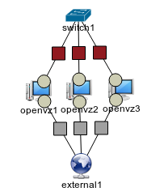
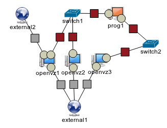

ToMaTo - Exercise
Overview
In this exercise we will use ToMaTo to develop and extend a chat application.
Exercise topics
- Simple topology management
- Link emulation
- Packet capturing
- External networks
- Programmable devices
Task 1: Topology creation
Details
- Open the ToMaTo web frontend in your browser
- Login to ToMaTo using your assigned credentials
- Create a new topology with
- Three OpenVZ nodes as chat clients from the hostgroup ukl
- A vpn connector that connects all chat client nodes
- An external network that is connected to all chat client nodes
Hints

- Connect the vpn first so that the devices will be enumerated correctly
- Connect elements by selecting one element and clicking on another element holding the ctrl-key (Mac: alt-key)
Task 2: First chat test
Details
- Download the simple chat client (link on overview page).
- Start your topology by clicking on the play button in the topology control window.
- Login to the nodes using the console and type /etc/init.d/ssh start to start the openssh daemon.
- Use ifconfig to find out the IP-addresses that have been assigned via DHCP.
- Upload the chat client script to all client nodes using scp or a tool like winscp.
- Username = root, Password = glabroot (configured in the device attribute window)
- Run the chat client on all nodes using the command python chat.py BROADCAST PORT NAME.
- BROADCAST = 10.0.0.255, PORT = 5000, NAME: Be creative!
Hints
- Optional: Create an ssh key-pair using ssh-keygen on your computer and upload it to the nodes using ssh-copy-id to enable passwordless login.
- Errors about missing files on openssh startup can be fixex with dpkg-reconfigure openssh-server.
- No python installed? Install it using sudo apt-get update and sudo apt-get install python.
- If you got a binding error when calling the chat client, your networking interface is misconfigured.
Task 3: External networks
Details
- Add another external network to your topology and connect one of your nodes to it.
- Stop the device first so you change its connections.
- Configure the interface to use a fixed address in the range 172.23.XX.1/16 with
- XX: user ID assigned to you, netmask: 255.255.0.0
- Command: ifconfig eth2 172.23.XX.1 netmask 255.255.0.0 up
- Start the chat client again with broadcast address 172.23.255.255
- Command: python chat.py BROADCAST PORT NAME
- BROADCAST = 172.23.255.255, PORT = 5000, NAME: Be creative!
- Can you chat with other people?
Hints
- If you restart your device the openssh deamon will not be restarted.
- Use ifconfig to make sure your interface is configured correctly
Task 4: Packet analysis
Details
- Activate packet capturing to file on one of the vpn connections
- Make sure to send some chat messages to be captured
- Look at the chat messages using the cloadsharkpacket analysis tool
- How big is a simple Hello world message?
- Which protocol headers are included in the message and how much overhead do they cause?
Hints
- Optional: Edit the chat script to send a message periodically
- Make sure you are chatting via the vpn using python chat.py BROADCAST PORT NAME.
- BROADCAST = 10.0.0.255, PORT = 5000, NAME: Be creative!
Solution of Task 4
Example packet
How big is a "Hello world message?
71 bytes + length of nickname, example nickname was "chatclient" so 81 bytes
Which protocol headers are included in the message and how much overhead do they cause?
| Protocol |
Overhead |
| Ethernet |
14 Bytes |
| IPv4 |
20 Bytes |
| UDP |
8 Bytes |
Task 5: Enhancing the chat client
Details
- Change the chat client to enable link emulation tests in task 6
- Extend the chat client to include timestamp and increasing sequence number upon sending
- Determine reordering and delay upon receiving
- Keep track of the next expected sequence number and report errors
- Calculate delay as time difference
- Test your modifications in the topology
Solution of Task 5 (1/2)
New global variables
Changes to sending code
Solution of Task 5 (2/2)
Changes to receiving code
Task 6: Link emulation
Details
- Upload the enhanced chat application from task 5 (Code: b9A) to the nodes
- Change the link characteristics (e.g. delay, loss, duplication) of one connection and test the new features
- Can you provoke packet reordering? (i.e. a new message is received after an older one)
Hints
- Let one client send a message periodically or try to type really fast
- Use big values for delay (up to several seconds) to see an effect
- Seeing negative delays? The host clocks might be out of sync
Solution of Task 6
Can you provoke packet reordering?
When the delay variance is high and the inter-packet time is small reordering can happen if the first message gets a high delay and the second message gets a low delay.
Task 7: Chat monitor
Details
- Download the Repy library and unpack it
- Create a Repy script that displays all chat messages that it receives
- Add a programmable device to the topology, connect it to the switch
- Upload your script to the programmable device and test the monitor
Hints
- Put your source file in src, call make and find your script in the build folder
- Use c-style #include <some/file> commands to include files from the library
- Have a look at ipmonitor.repy
- Make sure the headers exist before decoding them
- Use echo() instead of print
- Upload your script to your Repy device as image when it is prepared
Solution of Task 7
Monitor code
Task 8: Chat forwarder
Details
- Write a Repy script that forwards chat messages to its interfaces
- Adapt your topology so that you can test the forwarder
- What happens if you connect two of these scripts to one switch?
Hints
- Only forward chat message packets
- Have a look at switch.repy
- The forwarder device needs two switches to forward
- Reconnect one OpenVZ node, so you can reuse it
Solution of Task 8 (1/2)
Adapted topology

What happens if you connect two of these scripts to one switch?
If the forwarder sends to the incoming interface, a forwarding loop is the consequence. More complex topologies can even multiply messages and bring down the network. This problem can be solved with the spanning tree protocol.
Solution of Task 8 (2/2)
Forwarder code
Task 9: Chat filter
Details
- Extend the forwarder script (Code: 9fF) to filter out some bad words
- Read the list of bad words as parameters
Solution of Task 9
Filtering forwarder code
Summary
What have we learned?
- Basic ToMaTo usage
- Link emulation
- Packet capturing
- Programmable devices
Topics not covered
- Different operating systems using KVM
- Device image upload/download
- Device templates
- ToMaTo administration
Take-home tasks
- Write a chat robot that answers simple questions
- Change the chat client to allow unicast messages
- Write a chat server that keeps a list of participants and manages chat rooms
- Extend the chat client to forward messages to remote participants if needed
- Add acknowledgements to chat messages and implement retransmission
←
→
/
#
 Code: 7rA
Code: 7rA